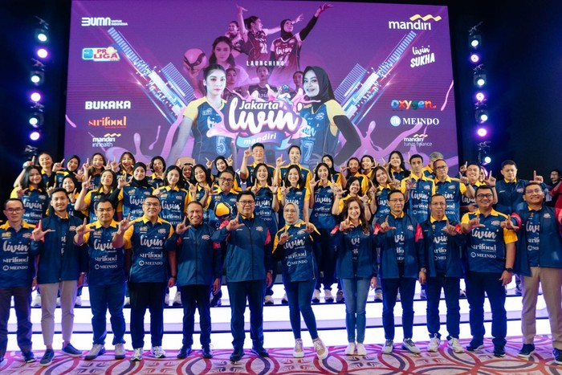

Tim Voli Putri Jakarta Livin' by Mandiri Siap Berlaga di Proliga 2025
Purwakarta - AboutNEWS --Menyambut kompetisi voli Proliga 2025, Bank Mandiri mengumumkan susunan tim voli putri profesional Jakarta Livin' Mandiri (JLM). Tim ini terdiri dari atlet berbakat yang dipersiapkan melalui seleksi ketat dan pelatihan intensif untuk menghadapi kompetisi voli prestisius di Indonesia. Pada seremonial pengumuman Susunan Tim Voli Putri Jakarta Livin' Mandiri (JLM) di Jakarta (27/12), Direktur Utama Bank Mandiri Darmawan Junaidi mengatakan pembentukan JLM bertujuan menjadi pusat talenta pemain voli putri Indonesia. Tim ini membina pemain muda agar memiliki profesionalisme dan karakter kuat untuk berprestasi di level lokal dan internasional, serta mengusung semangat 'young and bold' melalui nama Livin'.
Pembentukan tim ini menunjukkan komitmen Bank Mandiri sebagai BUMN dalam mengembangkan olahraga Indonesia, terutama voli putri, sesuai dengan fokus Kementerian BUMN pada kesejahteraan dan pengembangan SDM. "Kami percaya bahwa olahraga adalah salah satu cara terbaik untuk membangun karakter dan kerjasama tim. Melalui tim voli Bank Mandiri, kami ingin menunjukkan komitmen kami terhadap pengembangan bakat dan olahraga di Indonesia," ujar Darmawan dalam keterangan tertulis, Sabtu (28/12/2024). Ia menjelaskan tim yang terdiri dari atlet-atlet berbakat ini telah dipersiapkan melalui seleksi ketat dan pelatihan intensif untuk menghadapi tantangan liga voli paling prestisius di Indonesia. "Kami sangat antusias menyambut Proliga 2025 dan yakin bahwa JLM akan memberikan performa terbaik untuk para penggemar voli di seluruh Indonesia," tambahnya. Direktur Kepatuhan dan SDM Bank Mandiri, Agus Dwi Handaya, selaku Tim Manajer Jakarta Livin' Mandiri, mengatakan perusahaan percaya olahraga dapat menginspirasi dan memotivasi banyak orang untuk meraih prestasi lebih tinggi dalam berbagai bidang untuk Indonesia. Agus menambahkan Bank Mandiri selama ini dikenal sebagai pencetak bankir dan profesional keuangan, dan pihaknya ingin menjadikan Bank Mandiri melalui JLM sebagai pencetak pemain voli muda Indonesia yang profesional, berkarakter kuat, dan berprestasi.
Selain membesut Tim Bola Putri JLM, Bank Mandiri juga menjadi sponsor utama Tim Bola Voli Putra Jakarta Lavani Livin Transmedia karena kesamaan visi dengan Lavani dalam pembinaan talenta muda. Selain itu, Bank Mandiri juga menawarkan konten eksklusif dan special merchandise Jakarta Livin' Mandiri melalui fitur Livin' Sukha. Tak sampai di situ, Tiket pertandingan khusus saat JLM menjadi tuan rumah di Jawa Pos Arena, Surabaya akan dijual secara eksklusif lewat Livin' Suka. Sebagai informasi, Proliga 2025 rencananya akan bergulir mulai 3 Januari hingga 11 Mei mendatang. Di sektor putri, tim JLM harus bersaing dengan Electric PLN, Jakarta POPSIVO POLWAN, Jakarta Pertamina Enduro, Gresik Petrokimia Pupuk Indonesia, Bandung BJB Tandamata, dan klub pendatang baru Yogya Falcons. Jakarta Livin' Mandiri (JLM) - Woman Volleyball Team: Coach : Kim Ki-Jung Setter: Tiara Ariance Ratna Sanger Setter: Savira Dwi Oktoaviani Setter: Fitriyani Nurjannah Outside Hitter: Aulia Suci Nurfadila Outside Hitter: Poppy Aulia Nursutan Outside Hitter: Novita Anggun Vinata Opposite Hitter: Fiola Marsya Azzahra Opposite Hitter: Alya Annastasya Opposite Hitter: Wa Ode Ardiana Opposite Hitter: Venisa dwi octaviani Outside Hitter: Kadek Diva Yanti Putri Ardiantana Outside Hitter: Dilla Fadilla Outside Hitter: Liu Yan Han Midlle Blocker: Putri Andya Agustina Midlle Blocker: Wilda Siti Nurfadhilah Sugandi Midlle Blocker: Shintia Alliva Maulidina Midlle Blocker: Hanifa Nahda Aisa Midlle Blocker: Regina Fitrian Utami Libero: Sulastri Rahma Aulia Libero: Dinda Putri Ivoliana Libero: Diska Rahma Putri Baca artikel AboutNEWS, "Tim Voli Putri Jakarta Livin' by Mandiri Siap Berlaga di Proliga 2025".